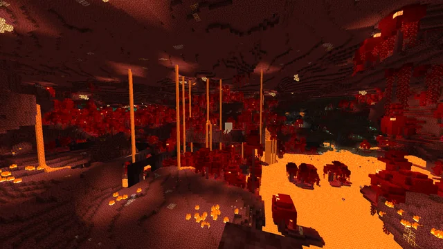

The Dimensions
There are three different dimensions in Minecraft: The Overworld, Nether and The End. In order to access each world, excluding the Overworld, you must have the proper material. What are the requirements to access these worlds? What do they contain?
The Nether
The Nether is menacing, hell-like realm containing fire, lava, structures, and “soul” sand. The souls of a being deceases in the Nether. You can access the nether using 10 obsidian blocks and a flint steel charge. You may find items such as basalt, ancient debris, shroomlight, soul soil etc. Be aware of the creatures as they are very hostile in this location.
The Overworld
The Overworld is the world in which players spawn in. Therefore, you can always access it. Players may find coal, iron, copper, redstone, diamond etc. The deeper as you explore the treacherous grounds, the more significant items you find. Once the players hit a Y-coordinate of -52, they may be able to discover the ancient city. The ancient city contains soul lanterns, deepslate and other obscure items. Additionally, It contains an assortment of treasuries. However, the players must move cautiously as it could trigger a siren that awakes the Warden.

The End
“The End” is a dimension which settles the final boss, the “End Dragon”. In order to access this, the players must find a stronghold. They must place 12 ender eyes, found by endermen, to activate this portal. The End is inhabited by endermen, shulkers and the end dragon. Once the players conquer the dragon, they have completed the game.